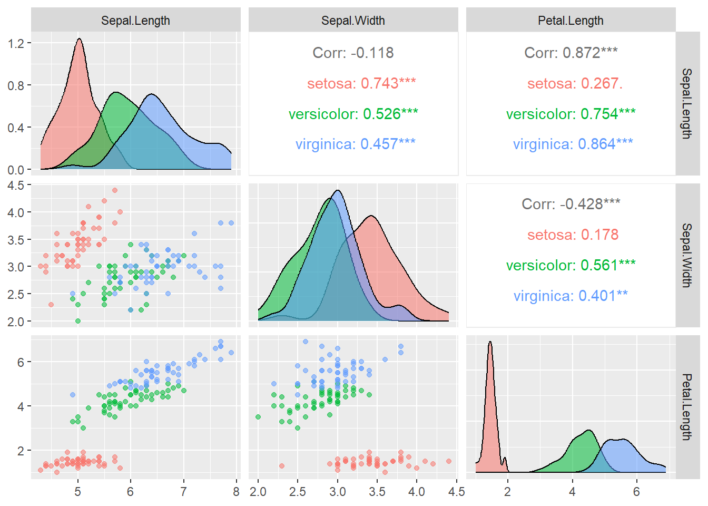
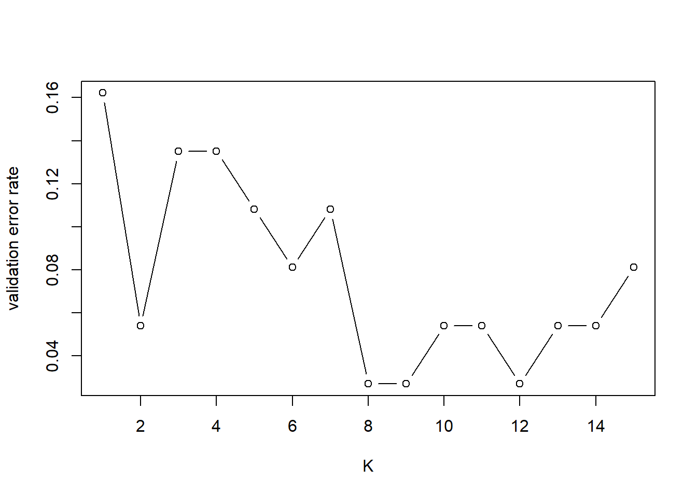
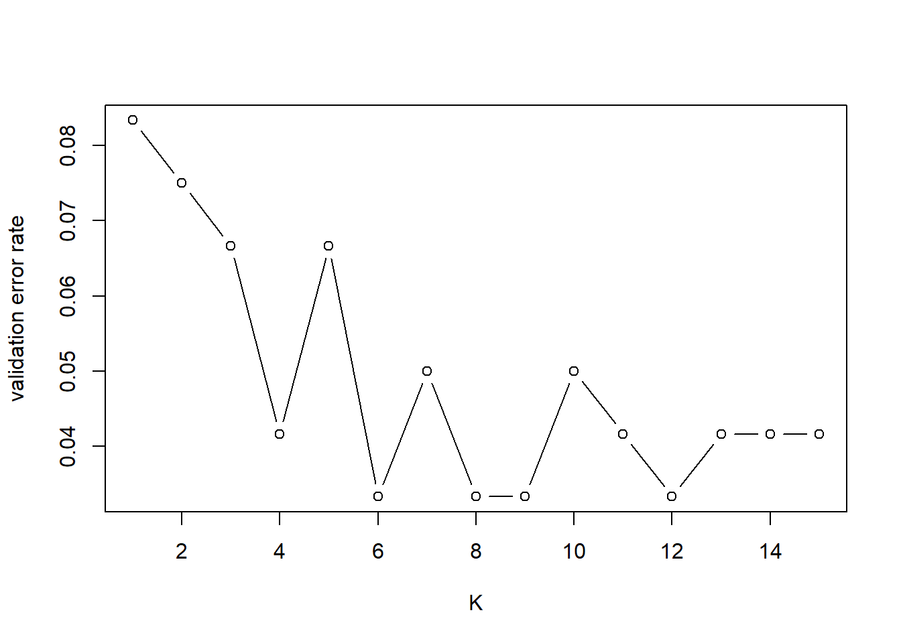

2 k-NN classification: Iris dataset
Iris flower dataset consists of 50 samples from each of three species of Iris (Iris setosa, Iris virginica and Iris versicolor). Four features were measured from each sample: the length and the width of the sepals and petals, in centimeters.
Let's start with an exploratory analysis on this data before building a classification model using \(k\)-NN.
2.1 Exploratory data analysis
First, we can calculate some summary statistics for this data.
library(skimr)
skim(iris)| Name | iris |
| Number of rows | 150 |
| Number of columns | 5 |
| _______________________ | |
| Column type frequency: | |
| factor | 1 |
| numeric | 4 |
| ________________________ | |
| Group variables | None |
Variable type: factor
| skim_variable | n_missing | complete_rate | ordered | n_unique | top_counts |
|---|---|---|---|---|---|
| Species | 0 | 1 | FALSE | 3 | set: 50, ver: 50, vir: 50 |
Variable type: numeric
| skim_variable | n_missing | complete_rate | mean | sd | p0 | p25 | p50 | p75 | p100 | hist |
|---|---|---|---|---|---|---|---|---|---|---|
| Sepal.Length | 0 | 1 | 5.84 | 0.83 | 4.3 | 5.1 | 5.80 | 6.4 | 7.9 | ▆▇▇▅▂ |
| Sepal.Width | 0 | 1 | 3.06 | 0.44 | 2.0 | 2.8 | 3.00 | 3.3 | 4.4 | ▁▆▇▂▁ |
| Petal.Length | 0 | 1 | 3.76 | 1.77 | 1.0 | 1.6 | 4.35 | 5.1 | 6.9 | ▇▁▆▇▂ |
| Petal.Width | 0 | 1 | 1.20 | 0.76 | 0.1 | 0.3 | 1.30 | 1.8 | 2.5 | ▇▁▇▅▃ |
Next, we use ggpairs to create plots for continuous variables by groups.
library(GGally)## Loading required package: ggplot2## Registered S3 method overwritten by 'GGally':
## method from
## +.gg ggplot2ggpairs(iris, columns=1:3, ggplot2::aes(colour=Species, alpha=0.2))
2.2 Classification using k-NN
2.2.1 Data splitting
We now divide the Iris data into training, validation and test sets to apply \(k\)-NN classification. 50% of the data is used for training, 25% is used for selecting the optimal \(k\), and the remaining 25% of the data is used to evaluate the performance of \(k\)-NN.
set.seed(1)
n <- nrow(iris)
ind1 <- sample(c(1:n), floor(0.5*n))
ind2 <- sample(c(1:n)[-ind1], floor(0.25*n))
ind3 <- setdiff(c(1:n),c(ind1,ind2))
iris.train <- iris[ind1,]
iris.valid <- iris[ind2,]
iris.test <- iris[ind3,]2.2.2 Distances
One important decision to be made when applying \(k\)-NN is the distance measure. By default, knn uses the Euclidean distance.
Looking at the summary statistics computed earlier, we see that Iris features have different ranges and standard deviations. This raises a concern of directly using the Euclidean distance, since features with large ranges and/or standard deviations may become a dominant term in the calculation of Euclidean distance. A simple remedy for this is to standardise1 all features so that they all have mean zero and variance of one.
var.mean <- apply(iris.train[,1:4],2,mean) #calculate mean of each feature
var.sd <- apply(iris.train[,1:4],2,sd) #calculate standard deviation of each feature
# standardise training, validation and test sets
iris.train.scale <-t(apply(iris.train[,1:4], 1, function(x) (x-var.mean)/var.sd))
iris.valid.scale <-t(apply(iris.valid[,1:4], 1, function(x) (x-var.mean)/var.sd))
iris.test.scale <-t(apply(iris.test[,1:4], 1, function(x) (x-var.mean)/var.sd))We will not discuss using other distances for \(k\)-NN in this course. If you are interested, please check the following links for codes and examples.
kknn: Weighted k-Nearest Neighbor Classifier The
kknnpackages allows computing (weighted) Minkowski distance, which includes the Euclidean distance and Manhattan distances as special cases.How to code kNN algorithm in R from scratch This tutorial explains the mechanism of \(k\)NN from scatch and shows ways to perform \(k\)-NN for any defined distances.
2.2.3 Finding the optimal value of k
Now we evaluate the error rate on the validation set for different values of k and plot the error rate against \(k\).
library(class)
K <- c(1:15)
valid.error <- c()
for (k in K){
valid.pred <- knn(iris.train.scale, iris.valid.scale, iris.train[,5], k=k)
valid.error[k] <- mean(iris.valid[,5] != valid.pred)
}
plot(K, valid.error, type="b", ylab="validation error rate")
QUESTION: Which value of \(k\) would you select for \(k\)-NN? \(k=\)
\(k=8\) or \(k=9\) gives the optimal performance on the validation set. For now, we just pick \(k=8\) to be our final classifier.
2.2.4 Prediction
Finally we can apply \(8\)-NN to the test set and see how accurate our classifier is.
k.opt <- which.min(valid.error)
test.pred <- knn(iris.train.scale, iris.test.scale, iris.train[,5], k=k.opt)
table(iris.test$Species,test.pred)## test.pred
## setosa versicolor virginica
## setosa 13 0 0
## versicolor 0 14 0
## virginica 0 0 11Our classifier achieves 100% accuracy, which is perfect!
2.3 Task
Considering the dataset is relatively small, we may use cross-validation to help decide \(k\). In this case, we only need to split the data into training and test sets.
set.seed(1)
n <- nrow(iris)
ind <- sample(c(1:n), floor(0.8*n))
iris.train <- iris[ind,]
iris.test <- iris[-ind,]- Write a piece of code to standardise features in the training data and test data.
var.mean <- apply(iris.train[,1:4],2,mean) #calculate mean of each feature
var.sd <- apply(iris.train[,1:4],2,sd) #calculate standard deviation of each feature
# standardise training, validation and test sets
iris.train.scale <-t(apply(iris.train[,1:4], 1, function(x) (x-var.mean)/var.sd))
iris.test.scale <-t(apply(iris.test[,1:4], 1, function(x) (x-var.mean)/var.sd))- Use leave-one-out cross-validation to decide the optimal value of \(k\).
Use knn.cv for leave-one-out cross-validation
K <- c(1:15)
cv.error <- c()
for (k in K){
train.pred <- knn.cv(iris.train.scale, iris.train[,5], k=k)
cv.error[k] <- mean(iris.train[,5] != train.pred)
}
plot(K, cv.error, type="b", ylab="validation error rate")
k.opt <- which.min(cv.error); print(k.opt)## [1] 6Suppose we have a set of observations \(X=\{x_1, x_2, \ldots, x_n\}\). To standardise the variable, we subtract its mean value and divide by its standard deviation. That is, \[x'_i = \frac{x_i-\text{mean}{X}}{\text{sd}(X)}\]↩︎